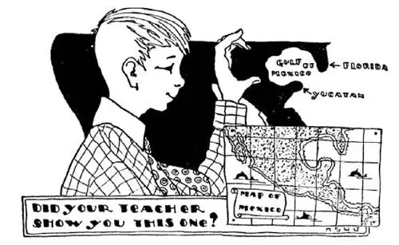
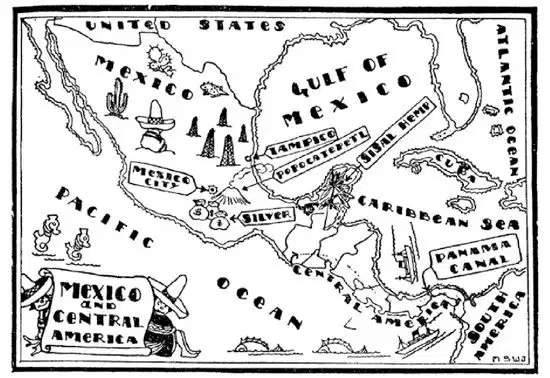

18
The War-God’s Country
战神的国家

TOMMY TINKER was eating a slice of bread and butter. He was biting it very carefully round the edges and between bites he looked at it thoughtfully.
“What in the world are you doing!” asked his father.
“I’m biting a map of North America,” replied Tommy. He placed it carefully on the tablecloth. “There’s Alaska on this corner, Labrador on this corner, Florida on this corner, and Yucatan opposite it.” Then he rolled out a little tail of bread and placed it on the other corner. “And there’s Lower California.”
“I ought to send you from the table for playing with your food,” said his father; “but I won’t if you can tell me where the Gulf of California is.”
“It’s not in California,” said Tommy. “You didn’t catch me that time. It’s in Mexico and so is Lower California too—both are in Mexico.”
“Right,” said his father. “When I was a boy my teacher asked me where the Gulf of California and Lower California were and, though I hadn’t studied my lesson, I answered ‘California,’ for I felt sure that must be right.”

Did your teacher show you this one?
你老师给你看过这个吗？
“Did your teacher ever show you this one?” asked Tommy. He curved the finger and thumb of his left hand to form the letter “G.” “G is for Gulf of Mexico,” he said. “My finger is Florida, my thumb is Yucatan and here is Mexico. Do you see it?”
“They didn’t teach me geography that way when I went to school,” said his father.
“They don’t now,” said Tommy. “I made that up myself.”
Perhaps you have heard people speak of some place as “God’s Country.” Well, the country just south of the United States is named “God’s Country,” but it is the War God’s Country. It is called Mexico after the Indians’ God of War, Mexitli.
When you cross the line from the United States to Canada you hardly know you are in another country—the people are the same, they talk the same language. But when you cross the line from the United States to Mexico you do know you are in another country—the people are different and they talk a different language. Mexico used to belong to Spain across the Atlantic; it now belongs to itself.
I told you there was a Peace Stone on the Canada line and that Canada and the United States agreed long ago never to fight each other. There is no peace stone on the Mexican border line and there have been many fights between the United States and Mexico. Our States of Texas, New Mexico, and Arizona once belonged to Mexico. Between Texas and Mexico is a river called the Rio Grande, which means River Grand or Grand River. The Rio Grande runs through such a dry country, however, that part of the time there is no river, only a dry place where the river did run, so that people can walk right across from the United States to Mexico in certain places, or at certain times of the year.
When the white people came to America there were Indians living all over our country. The white people pushed the Indians farther and farther off to the corners and out-of-the-way places until now there are so few Indians in the United States that many boys and girls have never seen an Indian except in the circus or on the 5-cent piece. When the white people came to Mexico there were Indians living all over that country too, but in Mexico there still are more Indians now living than there are white people. Many of the white Spanish people have married Indians, so some Mexicans are Spanish, more are Indian, and still more are mixed Spanish and Indian.
The people in the United States speak English and do many things as the people in England do. The people who came to Mexico were white people from Spain. So they speak Spanish and do many things as the people in Spain do.
When the Spanish first came to Mexico they found the Indians there wearing silver necklaces and silver bracelets and silver ornaments, so they knew there must be silver in Mexico. The Spaniards were really looking for gold, but silver was next best, so they set to work to dig for silver and they are still doing so, and even now, more than 400 years after white people came to Mexico more silver is mined there than anywhere else i. t. w. W. except the United States. Silver mines are in the mountains, the same chain of mountains as the Rocky Mountains in the United States, only in Mexico they are called Sierra Madre.
Up in the Sierra Madre Mountains, in a bowl-shaped valley, is the capital of Mexico. It is called Mexico City, so you don’t have to learn a new name. The farther north you go the colder it gets, but not always. The farther south you go the warmer it gets, but not always. But the higher up you go in the mountains the colder it gets—always. Mexico City is so far south you would think it would be very hot, but it is not, because it is so high up in the mountains. They have mild weather in Mexico City all the year round.
Near Mexico City is an old volcano with the peculiar name: Po-poca- tepetl. It sounds something like Po-poca-teakettle. Why didn’t they give it an easy name, you may wonder. They did, for in the language of the Indians who named it, Popocatepetl means “smoking mountain.” Popocatepetl is so far south we should expect it to be warm, but it is so high that its top is cold and is covered with snow all the year round. Popocatepetl is no longer firing up, but clouds of sulphur smoke pour out of it all the time and sulphur collects in its mouth. Indian workmen climb up the sides of Popocatepetl and climb down inside to get the sulphur, which is used in making matches and medicine and other things.
On the Gulf side of Mexico, along the shore, it is very warm indeed, very damp and unhealthful, so no one would live there if he didn’t have to; but great lakes of oil were found down under the ground, along the shore near a city called Tampico, and men have dug wells through the ground to get the oil. It is so close to the sea that tank ships can fill up with the oil and carry it to the United States and other places in the World. It is much cheaper to send oil by ship than by train, for one tank ship will carry as much as a thousand tank cars.

墨西哥和中美洲地图
The thumb-like piece of Mexico is called Yucatan. In Yucatan grows a plant with tall swords-haped leaves. From these leaves a fiber that looks like long gray hair, called sisal, is obtained. It is used to make rope and twine. From the juice of another plant that grows in Yucatan, chewing-gum is made.
【中文阅读】
汤米 · 廷克正在吃一片涂了黄油的面包。他很小心地沿着面包边缘咬着，还不时停下来看着面包，若有所思。
“我在咬一块北美洲的地图，”汤米回答说。他把面包小心地放在桌布上。“阿拉斯加在这个角，拉布拉多在这个角，佛罗里达在这个角，尤卡坦在佛罗里达对面。”然后他把一点面包末梢展开放在另一个角，“这里是下加利福尼亚。”
“你玩弄食物，我该把你从桌边赶走，”爸爸说；“但是如果你能告诉我加利福尼亚湾在哪我就不赶你走。”
“它并不在加利福尼亚，”汤米说，“那次你就没有难住我。它在墨西哥，下加利福尼亚也在墨西哥——两个都在墨西哥。”
“对的，”爸爸说。“我小的时候，老师问我加利福尼亚湾和下加利福尼亚在哪里，虽然我还没预习课文，我就回答说‘加利福尼亚’，因为我想当然地认为那一定是对的。”
“你的老师给你看过这个吗？”汤米问。他把他左手的食指和大拇指弯曲起来形成字母“G”的形状。“G代表墨西哥湾，”他说。“我的食指是佛罗里达，我的大拇指是尤卡坦，这里是墨西哥。你懂了吗？”
“我上学的时候老师没有这样教我地理，”爸爸说。
“他们现在也不这样教，”汤米说，“是我自己创造的。”
也许你曾听人把某个地方称为“神的国家”。是啊，美国南面那个国家就是叫做“神的国家”，但它是“战神的国家”。它叫墨西哥，是以印第安人的战神“墨西特利”命名的。
当你跨过边界线从美国进入加拿大时，你几乎不知道自己到了另一个国家——加拿大人和美国人长得一样，都说同样的语言。但是当你跨过边界线从美国进入墨西哥时，你很清楚自己到了另一个国家——墨西哥人和美国人长得不一样，他们说不同的语言。墨西哥曾经属于大西洋对岸的西班牙；现在它是一个独立的国家。
我告诉过你在加拿大边界线上有一个和平石，加拿大和美国早在很多年以前就约定好永不向对方开战。墨西哥边界线上没有和平石，美国和墨西哥之间也发生过很多次战争。我们的德克萨斯州、新墨西哥州和亚利桑那州以前属于墨西哥。德克萨斯州和墨西哥之间有一条河叫做格兰德河，意思是“大河雄壮”或者“雄壮的大河”。然而格兰德河流经的那片区域非常干燥，一年中部分时节格兰德河没有河水，河水经过的地方已经干涸，因此在有些地方或者一年中有些时候人们可以直接穿过河从美国走到墨西哥。
当白人初到美洲的时候，美国到处都生活着印第安人。白人把印第安人逼到越来越远的角落和偏僻的地方，到了现在美国只有极少数印第安人，以至于许多男孩和女孩从来都没有见过印第安人，只有在马戏团里和五分硬币上才看到印第安人的样子。当白人初到墨西哥时，那个国家到处也都生活着印第安人，但是现在在墨西哥，印第安人仍然比白人要多。许多西班牙白人和印第安人结了婚，因此有些墨西哥人是西班牙人，更多的是印第安人，还有更多的是西班牙人和印第安人的混血后裔。
美国人说英语，很多生活习惯与英国人相同。而最初到墨西哥的人是西班牙的白人。因此墨西哥人现在说西班牙语，很多生活习惯与西班牙人相同。
当西班牙人最初到达墨西哥时，他们发现当地的印第安人戴着银项链、银手镯和银饰品，于是他们就知道墨西哥肯定有银子。西班牙人其实是在找金子，但银子是仅次于金子的好东西，所以他们开始一心挖银子，现在还在挖，甚至就在此刻，在白人来到墨西哥400多年之后，墨西哥的白银产量仍居世界第二，仅次于美国。银矿位于山里，和美国的落基山脉相连，属同一山系，只不过在墨西哥这段山脉被叫做马德雷山脉。
在马德雷山脉上有一个碗形的山谷，里面坐落着墨西哥的首都，叫做墨西哥城，因此你不用再学一个新名字了。通常，越往北就越冷，但并不总是这样；越往南就越暖和，但也并不总是这样；但是上山，越高就越冷——总是如此。墨西哥城在往南很远的地方，你会以为那里很热，但实际上并不是这样，因为它在高高的山上。墨西哥城一年四季气候都很温和。
墨西哥城附近有一座古老的火山，它有一个奇怪的名字：波波卡特佩特。听起来就像是波波卡水壶 [1] 。你也许会想：为什么不给它取个简单的名字呢？这其实就是个简单的名字，因为在给火山命名的印第安人的语言中，“波波卡特佩特”的意思是“冒烟的山”。波波卡特佩特在南部那么远的地方，我们会认为那里该是很温暖的，但是它海拔很高，山顶非常寒冷，终年积雪覆盖。波波卡特佩特不再喷发，但是成团的硫黄烟一直从里面喷出来，硫黄不断堆积在火山口。印第安工人顺山坡爬上波波卡特佩特火山，然后进入火山口去采集硫黄，硫黄可以用于制造火柴、药物和其他东西。
墨西哥沿海湾这一带的气候炎热潮湿，不利于健康，因此除非是不得已，没有人愿意住在那儿；但是在这沿岸有个城市叫做坦皮科，人们在附近的地下 发现了大油池，于是打井深入地下开采石油。这里离海很近，所以油船可以装满石油运送到美国和世界其他地方。用船运油远比火车便宜得多，因为一艘油船装运的石油和一千辆铁路罐车一样多。
墨西哥那块像大拇指的地方叫做尤卡坦。尤卡坦生长着一种植物，叶子形似长剑。从这些叶子里可以提取出一种看起来就像灰色长头发的纤维，叫做波罗麻纤维。这种纤维可以用来做粗绳和麻线。尤卡坦还生长一种植物，它的汁水可以做口香糖。